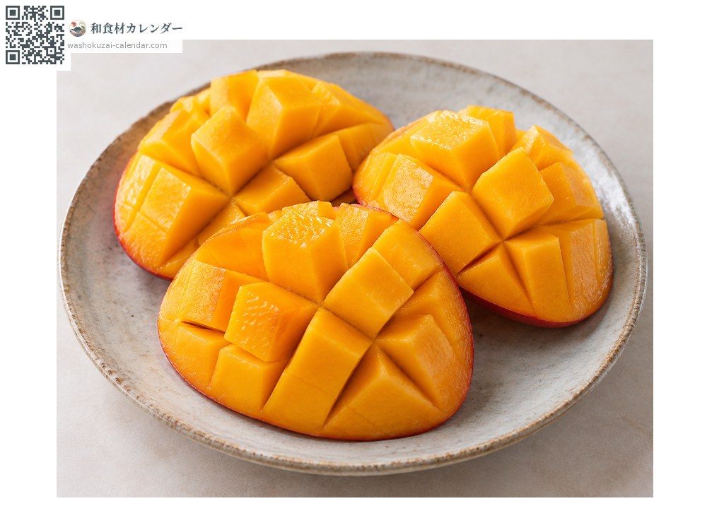
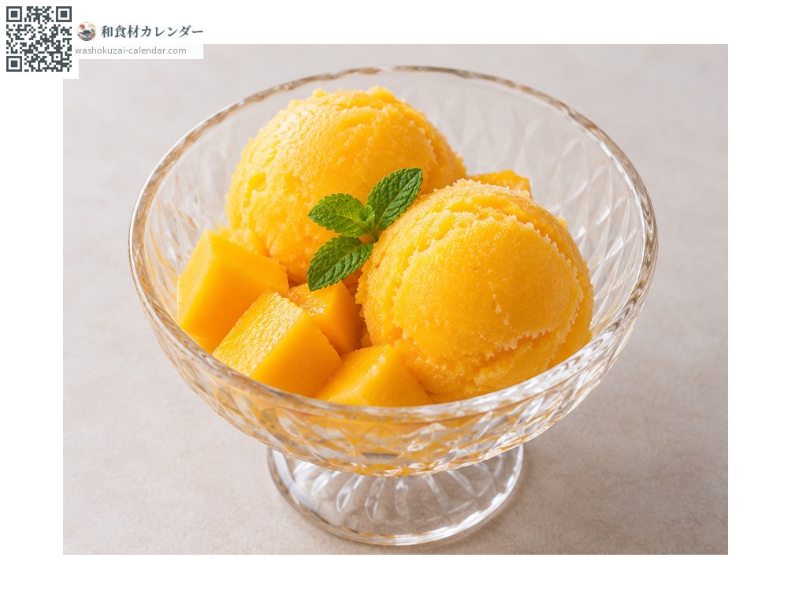
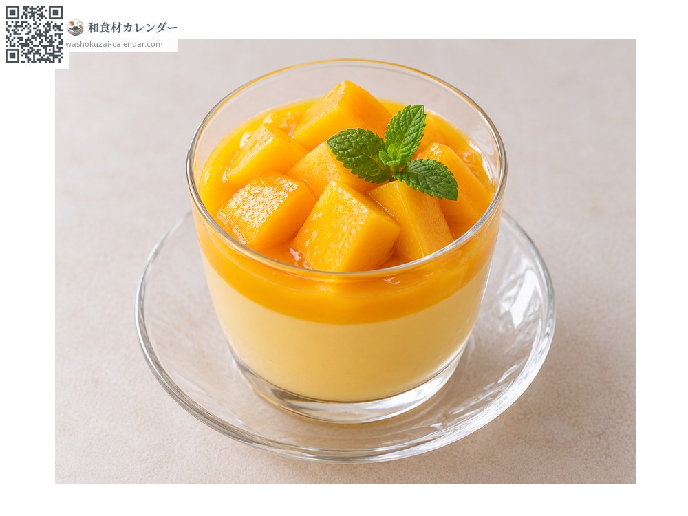

ผลไม้
มะม่วงญี่ปุ่น
マンゴー まんごー
อร่อยที่สุดในเดือน มิ.ย., ก.ค., ส.ค.

ช่วงที่อร่อยที่สุด
ม.ค.
ก.พ.
มี.ค.
เม.ย.
พ.ค.
มิ.ย.
ก.ค.
ส.ค.
ก.ย.
ต.ค.
พ.ย.
ธ.ค.
ช่วงอร่อยที่สุดมีจำหน่าย
วิธีปรุง

ทานสด
หั่นสามชิ้นเลี่ยงเมล็ด กรีดเนื้อเป็นตารางแล้วดันเปลือกกลับด้าน

เชอร์เบต
แช่แข็งเนื้อผลแล้วทำ ความหวานจะเข้มข้นขึ้น

พุดดิ้ง
ผสมเนื้อผลลงไป เข้ากับขนมแบบตะวันตกได้ดี
วิธีเลือก
ผลแดงทั่วทั้งลูกและมีกลิ่นหอมหวาน กดเบา ๆ แล้วยืดหยุ่นแปลว่าพร้อมกิน
วิธีเก็บรักษา
บ่มที่อุณหภูมิห้อง เมื่อกลิ่นหอมแรงขึ้นให้แช่เย็นก่อนกิน 2-3 ชั่วโมง ถ้าเย็นเกินไปความหวานจะลดลง
แหล่งผลิตหลัก
เกร็ดน่ารู้
มะม่วง ไทโยโนะทามาโงะ จากมิยาซากิ ต้องผ่านเกณฑ์เข้มงวดเช่นความหวานตั้งแต่ 15 องศาขึ้นไปจึงจะใช้ชื่อนี้ได้ ปล่อยให้สุกคาต้นแล้วใช้ตาข่ายรับผลที่ร่วง จึงได้รสของผลที่สุกบนต้นจริง ๆ